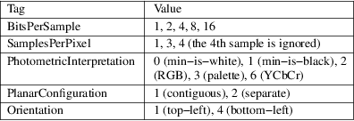
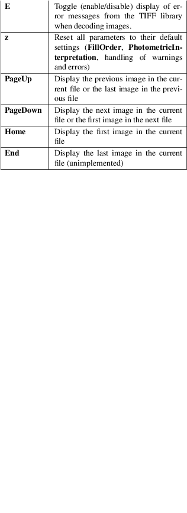

tiffgt − display an image stored in a TIFF file (Silicon Graphics version)
tiffgt [ options ] input.tif â¦
tiffgt displays one or more images stored using the Tag Image File Format, Revision 6.0.
tiffgt correctly handles files with any of the following characteristics:

Data may be organized as strips or tiles and may be compressed with any of the compression algorithms supported by the libtiff library.
For palette images (PhotometricInterpretation=3), tiffgt inspects the colormap values and assumes either 16−bit or 8−bit values according to the maximum value. That is, if no colormap entry greater than 255 is found, tiffgt assumes the colormap has only 8−bit values; otherwise it assumes 16−bit values. This inspection is done to handle old images written by previous (incorrect) versions of libtiff.
tiffgt can be used to display multiple images one−at−a−time. The left mouse button switches the display to the first image in the next file in the list of files specified on the command line. The right mouse button switches to the first image in the previous file in the list. The middle mouse button causes the first image in the first file specified on the command line to be displayed. In addition the following keyboard commands are recognized:

|
−c |
Force image display in a colormap window. | ||
|
−d |
Specify an image to display by directory number. By default the first image in the file is displayed. Directories are numbered starting at zero. | ||
|
−e |
Enable reporting of error messages from the TIFF library. By default tiffgt silently ignores images that cannot be read. | ||
|
−f |
Force tiffgt to run as a foreground process. By default tiffgt will place itself in the background once it has opened the requested image file. | ||
|
−l |
Force the presumed bit ordering to be LSB to MSB. | ||
|
−m |
Force the presumed bit ordering to be MSB to LSB. | ||
|
−o |
Specify an image to display by directory offset. By default the first image in the file is displayed. Directories offsets may be specified using C−style syntax; i.e. a leading 0x for hexadecimal and a leading 0 for octal. | ||
|
−p |
Override the value of the PhotometricInterpretation tag; the parameter may be one of: miniswhite , minisblack, rgb, palette, mask, separated, ycbcr, and cielab. | ||
|
−r |
Force image display in a full color window. | ||
|
−s |
Stop on the first read error. By default all errors in the input data are ignored and tiffgt does itâs best to display as much of an image as possible. | ||
|
−w |
Enable reporting of warning messages from the TIFF library. By default tiffgt ignores warning messages generated when reading an image. | ||
|
−v |
Place information in the title bar describing what type of window (full color or colormap) is being used, the name of the input file, and the directory index of the image (if non−zero). By default, the window type is not shown in the title bar. |
Images wider and taller than the display are silently truncated to avoid crashing old versions of the window manager.
tiffdump (1), tiffinfo (1), tiffcp (1), libtiff (3tiff)
LibTIFF contributors
1988-2022, LibTIFF contributors